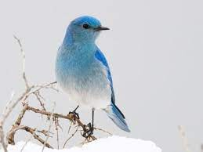
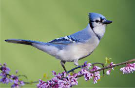
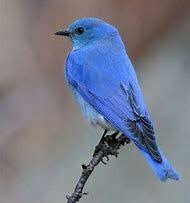
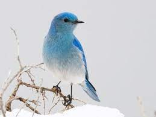
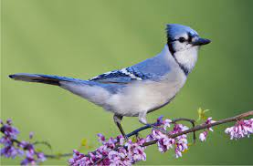
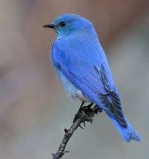
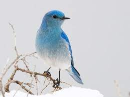
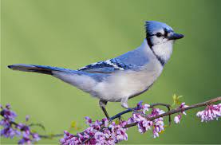
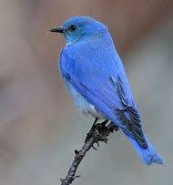
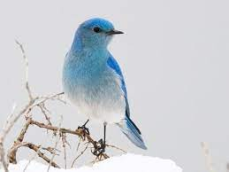
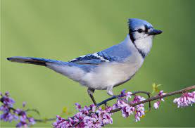
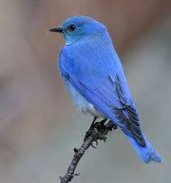
I had a Bluebird when I was 6 years old. I dont remmember its name😅. One day I was holding the bird and I threw it up for it to fly but intead it hit the sealing and fell down but I catched it at the last second or it could have died. The bird couldn't fly but I always wanted it to fly in the house so I thought if would take it outside and throw it it might start flying. I threw it as hard as i could up in the air but of course it didn't do what i was expecting it to do so after i threw it i can see it coming down and trying to fly but it hit the ground and when i went to see it it was out.
Bluebirds leave breeding grounds in the north of their range to winter in the southeastern U.S. or Mexico. Populations in the northern part of their range are entirely migratory, spending winters in the southeastern United States or Mexico. Bluebirds are friendly. They seem to almost enjoy humans.They display no fear of nesting near human habitation.